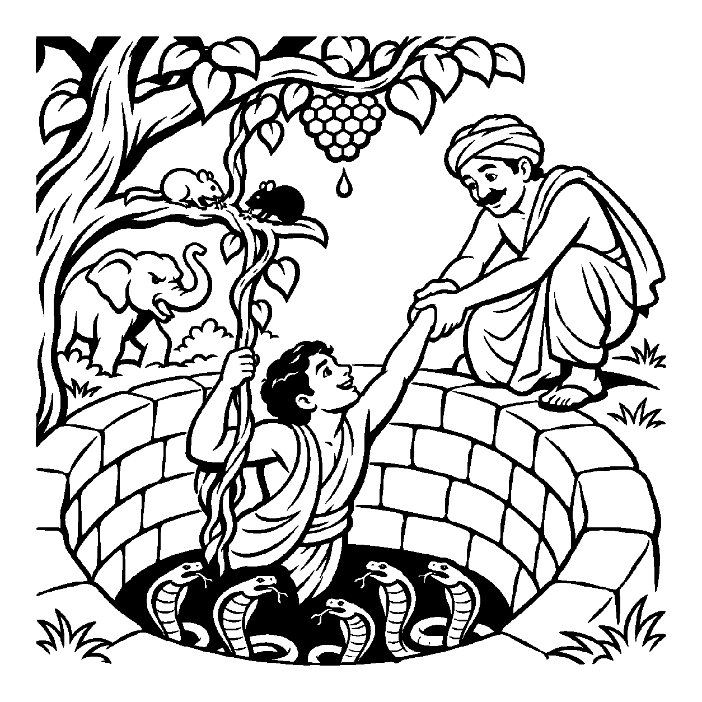

ભોજનની થાળી સામે બેઠેલા એક વ્યક્તિ તરફ જુઓ: જ્યારે તેની આગળ સુવર્ણકટોરામાં કેસર અને બદામથી સુવાસિત મધુર ખીર પીરસવામાં આવે છે, ત્યારે તે ચમચી ભરીને મોંમાં મૂકે છે અને આંખો મીંચીને બોલે છે: "અહો! કેવો અદ્ભુત સ્વાદ છે!" તેના ચહેરા પર તૃપ્તિ અને હર્ષ છલકાઈ ઊઠે છે. પરંતુ જો બીજી જ ક્ષણે તેને તાવ મટાડવા માટે કડવો લીમડાનો ક્વાથ પાવામાં આવે, તો તે મોં બગાડે છે, કપાળે કરચલીઓ પાડે છે અને અકળાઈ ઊઠે છે; કારણ કે તે સ્વાદ અને કડવાશને પોતાની જીભ દ્વારા સાક્ષાત્ ભોગવી રહ્યો છે! તેવી જ રીતે સંસારાવસ્થામાં જીવ જ્યારે પુણ્ય અને પાપના ફળરૂપ અનુકૂળ કે પ્રતિકૂળ સંયોગોમાં તન્મય થઈને રાગ કે દ્વેષ કરે છે, ત્યારે તે તે સુખ અને દુઃખરૂપી સંવેદનનો સાક્ષાત્ ભોક્તા બને છે. વિભાવજનિત સુખ-દુઃખના ભોગવટાને દર્શાવતો દ્રષ્ટિકોણ એટલે 'ભોક્તાનય'.
ભોક્તાનય જીવને સંસારની કડવી વાસ્તવિકતાનો સાક્ષાત્કાર કરાવે છે. જો જીવ ભોક્તા જ ન હોત, તો નરકની અસહ્ય વેદનાઓ કોણ ભોગવે છે? જ્યાં સુધી જીવમાં મોહ અને વિભાવ છે, ત્યાં સુધી તેને પોતાના કર્મોનું ફળ ભોગવવું જ પડે છે. આ ભોગવટો જીવને ચેતવે છે કે પાપનું ફળ અત્યંત કડવું છે, માટે વિષયવાસનાઓમાંથી પાછા વળો.
આ નય સાધકને સંસારના ક્ષણિક ભોગોની ભયાનકતા બતાવી વીતરાગભાવ તરફ વાળે છે.
ખીર જમંતાં હર્ષ થાય, કડવા ક્વાથે શોક;
ભોક્તાનયથી ભોગવે, સુખ-દુઃખ જીવ ત્રિલોક.
રાગ દ્વેષના ભાવથી, ભોગ તણો વિસ્તાર;
ભોગ તજી વૈરાગ્ય લહે, પામે ભવનો પાર.
સાધકને સંસારના ક્ષણિક ભોગોની ભયાનકતા બતાવી વીતરાગભાવ તરફ વાળે છે.

ધર્મક્ષેત્રના એક ગાઢ અરણ્યમાં એક યુવાન વટેમાર્ગુ સુરેશ જતો હતો. અચાનક એક મદમસ્ત હાથી તેની પાછળ પડ્યો. હાથીથી બચવા સુરેશ દોડ્યો અને સામે આવેલા એક જૂના કૂવામાં કૂદી પડ્યો. કૂવામાં પડતાં પડતાં તેના હાથમાં એક વડની વડવાઈ આવી ગઈ. સુરેશ વડવાઈ પકડીને લટકી રહ્યો. તેણે નીચે જોયું તો કૂવાના તળિયે ચાર ભયાનક ઝેરી સાપ ફેણ ચડાવીને બેઠા હતા! ઉપર જોયું તો સફેદ અને કાળા બે ઉંદરો તે વડવાઈના મૂળને કાપી રહ્યા હતા! મોત માથા પર તોળાતું હતું. પરંતુ બરાબર તે જ સમયે ઉપર મધપૂડામાંથી મધનું એક મીઠું ટીપું સુરેશના હોઠ પર ટપક્યું. સુરેશે જીભ લંબાવીને તે મધ ચાખ્યું અને આંખો મીંચીને બોલ્યો: "અહા! કેવું મીઠું મધ છે!" તે નીચેના સાપ, ઉપરનો હાથી અને ઉંદરો બધું ભૂલીને મધના સ્વાદમાં મસ્ત થઈ ગયો!
તે સમયે કૂવાના કાંઠેથી એક વિદ્વાન તત્વચિંતક પસાર થયા. તેમણે સુરેશને મધ ચાખતો જોઈને બૂમ પાડી: "અરે અબુધ માનવી! ભોક્તાનયના આ મિથ્યા મોહમાંથી જાગ! તું નીચેના કાળરૂપી સાપ અને ઉંદરોને ભૂલીને કેવળ એક ક્ષણિક મધના ટીપાનો ભોગ ભોગવવામાં મસ્ત થઈ ગયો છે? આ મધનું ટીપું તને બચાવી નહીં શકે! આ સંસારી ભોગો તારા વિનાશનું કારણ છે. તું ભોગવટો છોડ અને ઉપર હાથ લંબાવ, હું તને બહાર કાઢું!" આ ચેતવણી સાંભળતાં જ સુરેશનો મોહ ભંગ થઈ ગયો. તેણે મધ તરફ જોવાનું બંધ કર્યું, પોતાના સાચા સંકટને ઓળખ્યું અને સંતનો હાથ પકડીને કૂવાની બહાર નીકળી ગયો. તેને સમજાયું કે વિષયભોગ એ કેવળ મોતનો ફંદો છે. તેણે સંસાર ત્યજી દીધો અને તેનું ચિત્ત પરમ વિશ્રામમાં લીન થઈ ગયું.
જો જીવ કેવળ ભોક્તાનયને જ એકાંત સત્ય માની આત્માને કાયમ માટે સુખ-દુઃખનો ભોગી માની લે, તો ક્યારેય મોક્ષ અને મુક્તિ સંભવ બની શકે નહીં. એક જ પાસાને પકડી રાખવાથી વસ્તુની સમગ્ર અનેકાંતમય સત્તા વિખંડિત થાય છે અને સાધક પોતાના જ એકાંગી આગ્રહના બંધનમાં ફસાઈને સાચી શાંતિ ગુમાવી બેસે છે.
આ નય સંસારી અવસ્થામાં વિભાવજનિત ભોગવટાની વાસ્તવિકતા દર્શાવી સાધકમાં વૈરાગ્ય પ્રગટાવે છે, જેથી જીવ સહજ શાંતિમાં ડૂબી જાય છે.